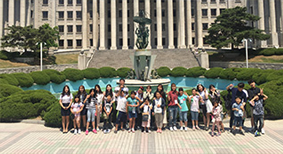

Global Service Corps
GSC는 '학문과 평화'의 전통을 계승하고, '인간에게 사랑을,
인류에게 평화를'이라는 가치 아래, 대학 사회공헌의 새로운 패러다임을 제시합니다.
About GSC
지구사회봉사단 GSC를 소개 합니다.
GSC 활동소개
교과목운영
-
사회봉사
자유선택과목 사회봉사 1,2,3 사회적 역할 중 한 분야인 사회봉사를 몸소 실천 할 수 있는강좌
-
전환21
대학다운 미래대학을 위한 새로운 학풍 역동적인 대학문화 형성, 5대 연계협력 클러스터 중심의 학문 분야 국내·외 산학협력 활성화 지속가능한 인간과 전 지구적 문제에 대한 교육·연구·천의 창의적 과제 지원
해외봉사
-
대학 자체 해외봉사
캄보디아, 에티오피아, 미얀마 등
-
기관 연계 해외봉사
WFK 청년 중기봉사단
교육봉사
-

다문화 멘토링
한국장학재단과 함께하는 서울시 다문화 가정 아동 대상 멘토링 활동
-
지식봉사캠프
한국장학재단과 연계, 도서산간지역 청소년을 대상 교육 및 체험활동
-

토요글세상 나들이
관악구 내 초등학교 대상 토요일 글쓰기 수업 멘토링 활동
-

드림스타트 멘토링
동대문구 내 취약계층 아동을 위한 교육·심리·정서지원 멘토링 활동
지역사회봉사
-

회기동 사람들
청년들의 문화예술 컨텐츠 접목을 통해 상업지역으로 변해가는 대학가를 사람 흐르는 골목문화로 낭만 골목 거리조성
-
GSC학생 기획단·외국인 학생 기획단
프로그램을 기획하고 실천하는자주적인 활동의 기회를 제공하여 체계적이고 학생 주체적인 확장된 의미의 사회공헌의 모델 개발·운영
-

몰래산타
사회적 소외계층을 대상으로 하여 크리스마스 이브에 나눔을 실천하는 활동
-
하루봉사
봉사활동에 뜻을 두고 있지만 지속적인 참여가 어려운 학생들을 위한 하루활동
“ 프로그램 참여자 모집은학기 초에 [GSC프로그램] 카테고리에서 확인할 수 있습니다.”
*해외봉사 참여자는 학기중 (4-5월, 10-11월)에 모집하며 활동은 방학중에 이루어집니다.
기타
네팔,시에라리온 등 긴급난민 및 자연재해 구호 모금 지원
대학생을 중심으로시민단체 기관전문가 등이 함께 참여하는 포럼 개최
대학생을 중심으로시민단체 기관전문가 등이 함께 참여하는 포럼 개최
미래 대학이 나아갈 방향을 모색하기 위한 교육의 역할을 논의하고 국제 학술대회에 참여 등